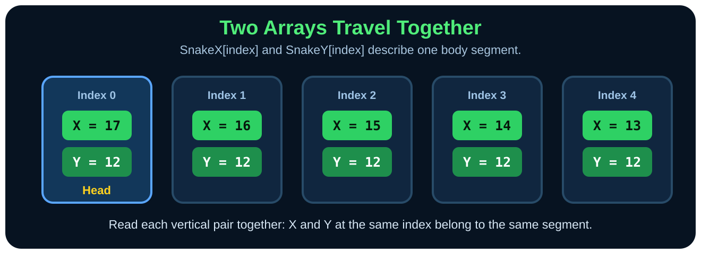

Paste checkpoint 4
Build the Starting Snake
The Snake class keeps its segment arrays private and exposes behavior through public members.
4
Start the Snake class
Create SnakeModel.smile and paste this class opening below the enums and GridPoint Type.
Class Snake
Private SegmentXs[840] As Number
Private SegmentYs[840] As Number
Private CurrentLength As Number
Private CurrentDirection As MoveDirection
Private RequestedDirection As MoveDirection
Private TailX As Number
Private TailY As Number
Public Sub New()
Call Me.Reset()
End Sub
Public Sub Reset()
Me.CurrentLength = 5
Me.CurrentDirection = MoveDirection.Right
Me.RequestedDirection = MoveDirection.Right
Me.TailX = 0
Me.TailY = 0
Me.SegmentXs[0] = 17
Me.SegmentYs[0] = 12
Me.SegmentXs[1] = 16
Me.SegmentYs[1] = 12
Me.SegmentXs[2] = 15
Me.SegmentYs[2] = 12
Me.SegmentXs[3] = 14
Me.SegmentYs[3] = 12
Me.SegmentXs[4] = 13
Me.SegmentYs[4] = 12
End Sub
Read the object boundary
Private means only code inside Snake can touch the raw arrays and movement state. Public Sub New() is the constructor; creating a new Snake automatically calls Reset. Me means the current object.
Which way is the new snake facing?
MoveDirection.Right. The head is at (17,12), to the right of the remaining body.
Repetition builds memory
Reinforce what you learned
Say it again
The starting snake is five coordinate pairs. Segment 0 is the head; larger indexes move toward the tail.
Recall it
What coordinate is stored for the starting head?
Check your answer
(17, 12). Later, drawing converts that grid coordinate into pixels.